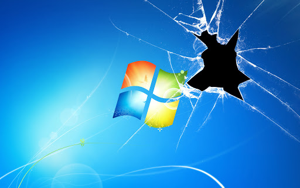

Minyahel Fekadu
Why Python is the top programming language
By Minyahel on February 10, 2020
 Programmers and developers can tap into a variety of languages to build applications,
websites,
and other programs. Ultimately,
your preferred language is going to be the one with which you're most comfortable and that
gets
the job done most effectively.
But one particular language emerged as the top choice in a study released in September by
the
IEEE, and that's Python.
To gauge the popularity of different languages, the IEEE's study ranked 11 data points from
eight different sources: CareerBuilder,
Google, GitHub, Hacker News, the IEEE, Reddit, Stack Overflow, and Twitter. Depending on the
source, the IEEE looked at such factors
as searches, new repositories, posts mentioning each language, and job postings made within
the
last 30 days. Using this method, Python
was the only language that scored a 100% ranking.
Programmers and developers can tap into a variety of languages to build applications,
websites,
and other programs. Ultimately,
your preferred language is going to be the one with which you're most comfortable and that
gets
the job done most effectively.
But one particular language emerged as the top choice in a study released in September by
the
IEEE, and that's Python.
To gauge the popularity of different languages, the IEEE's study ranked 11 data points from
eight different sources: CareerBuilder,
Google, GitHub, Hacker News, the IEEE, Reddit, Stack Overflow, and Twitter. Depending on the
source, the IEEE looked at such factors
as searches, new repositories, posts mentioning each language, and job postings made within
the
last 30 days. Using this method, Python
was the only language that scored a 100% ranking.
If You Can't Upgrade From Windows 7 to Windows 10, What Should You Do?
By Minyahel on February 03, 2020
 While I always recommend upgrading to the latest and greatest version of whatever software you’re using, this might not be the best option if you’re running an older device that’s already struggling to function. This is especially true of operating systems—although sometimes even your older device can benefit from an OS upgrade. First, I’d want to do a little more digging to see if your laptop truly can’t support Windows 10. It’s possible that your initial upgrade process went south for some unknown reason. Your laptop’s manufacturer might be correct, but I’d want to confirm your device’s ineligibility at least one more time before writing off the latest version of Microsoft’s OS.
Continue reading ->Top 10 Evil Ways to Use Technology
By Minyahel on January 15, 2020
 Like other powerful tools, technology can be used for great good or for great evil. Learn
how
people use technology for wrongdoing
so you can protect yourself—or use their tricks to actually do good. Here are the top 10
“evil”
ways you can use technology.
Like other powerful tools, technology can be used for great good or for great evil. Learn
how
people use technology for wrongdoing
so you can protect yourself—or use their tricks to actually do good. Here are the top 10
“evil”
ways you can use technology.
Copyright © 2020 Minyahel Fekadu. All rights Reserved